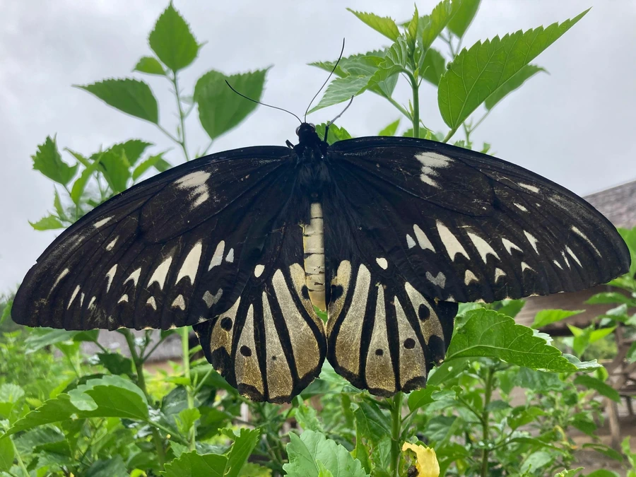

昆虫 · 动物界
亚历山大鸟翼蝶 Ornithoptera alexandrae

世界上翅展最大的蝴蝶，雌蝶可达三十厘米，翅面黑褐配金绿斑纹，仅分布于巴布亚新几内亚，属极危物种。
- 分类
- 门节肢动物门纲昆虫纲目鳞翅目科凤蝶科属鸟翼蝶属
- 栖息环境
- 巴布亚新几内亚东部低地热带雨林的林冠与林缘
- 地理分布
- 巴布亚新几内亚东部（欧文斯坦利山脉周边低地）
- 保护级别
- 列入《濒危野生动植物种国际贸易公约》附录一，被评估为极危
物种志
亚历山大鸟翼蝶是已知翅展最大的蝴蝶，雌蝶翅展可达二十八至三十厘米，雄蝶略小。前翅狭长呈黑褐色，翅脉间透出乳白与金绿色的斑纹，后翅中部有一条金黄色宽带，翅形宽大如鸟翼。雌蝶腹部肥大，翅面斑纹比雄蝶更宽更淡，产卵量少，一只雌蝶一生只产几十枚卵，卵径近四毫米，是蝴蝶中最大的卵之一。
它仅分布于巴布亚新几内亚东部的一小片低地雨林，成虫在树冠层活动，飞行缓慢有力，喜在高大的树顶盘旋并取食花蜜。幼虫专食马兜铃属藤本植物，雌蝶将卵产在寄主叶片上，幼虫期约两个月，化蛹于粗枝上。1906 年被发现后一度遭大量采集，如今被列入《濒危野生动植物种国际贸易公约》附录一，栖息地又因油棕种植园扩张而迅速缩小，被评估为极危。
形态与习性
- 翅展雌蝶可达二十八至三十厘米，世界最大
- 翅色黑褐底，金绿色斑与后翅金黄带
- 雌雄差异雌蝶更大、斑纹宽淡，雄蝶色较艳
- 食性幼虫专食马兜铃属藤本
- 发现1906 年由采集者阿尔伯特·米克发现
- 保护国际公约附录一，禁止国际商业贸易
趣味知识
- 它的名字来自英国国王爱德华七世的王后亚历山德拉，发现者以王室成员为其命名。
- 雌蝶翅展近三十厘米，比许多小鸟的翼展还宽，是名副其实的蝶中之王。
- 它的卵直径近四毫米，在蝴蝶中数一数二，幼虫一孵化就有充足的食物储备。